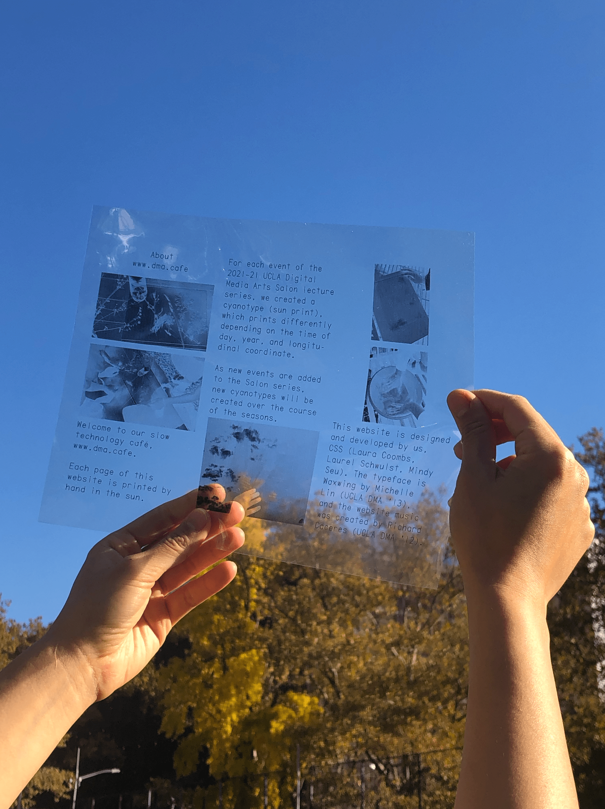
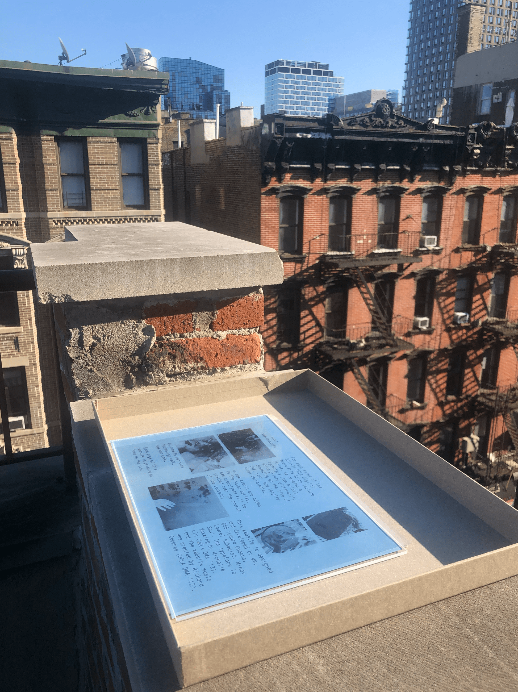

![the following information is presented as a blue and white cyanotype (sun print) with a few faded images showing the process of sun printing inline to the text: Welcome to our slow technology café, www.dma.cafe. Each page of this website is printed by hand in the sun. For each event of the 2020–21 UCLA Digital Media Arts Salon lecture series, we created a cyanotype (sun print), which prints differently depending on time of day, year, and longitudinal coordinate. As new events are added to the Salon series, new cyanotypes will be created over the course of the seasons. This website is designed and developed by CSS (Laura Coombs, Laurel Schwulst, Mindy Seu). The typeface is Waxwing by Michelle Lin (UCLA DMA '13), and the website’s background music was created by Richard Caceres (UCLA DMA '12).](../images/sun-about-links.png)
v1. 74.0060° W
☀
All images on this website were hand printed in the sun.
This one was printed at 74.0060° W on Nov 14, 2020.
It’s version 1.


×
All images on this website were hand printed in the sun.
This one was printed at 74.0060° W on Nov 14, 2020.
It’s version 1.

